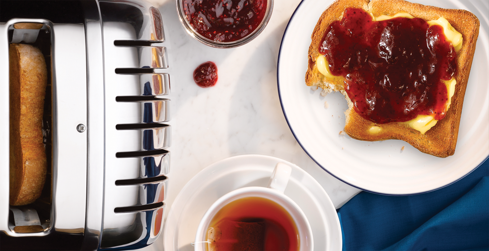
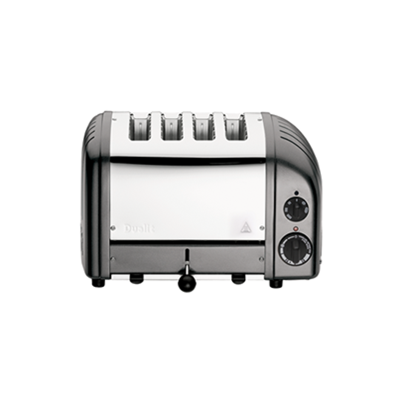
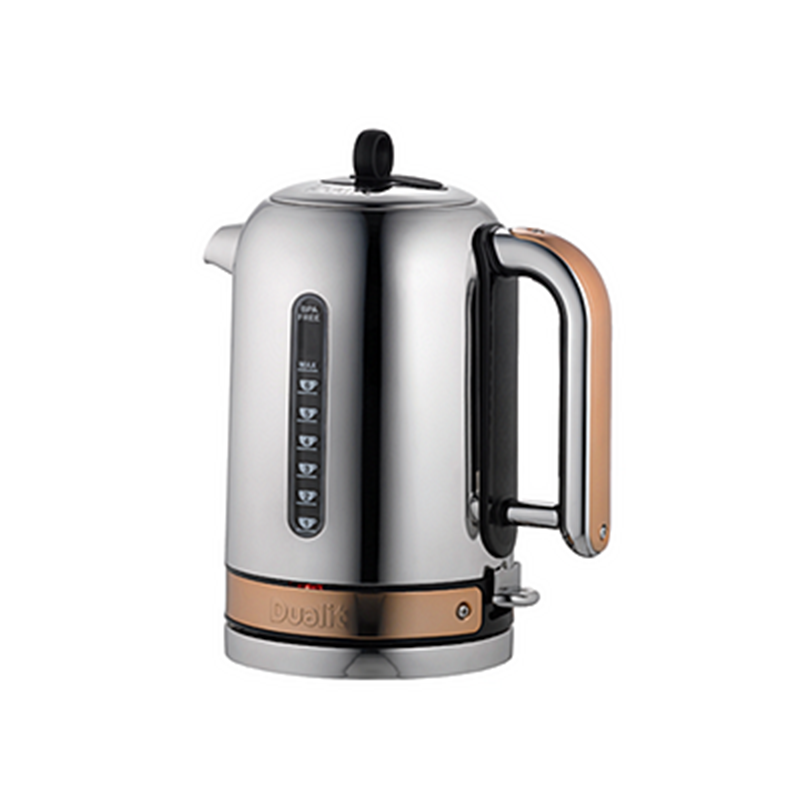
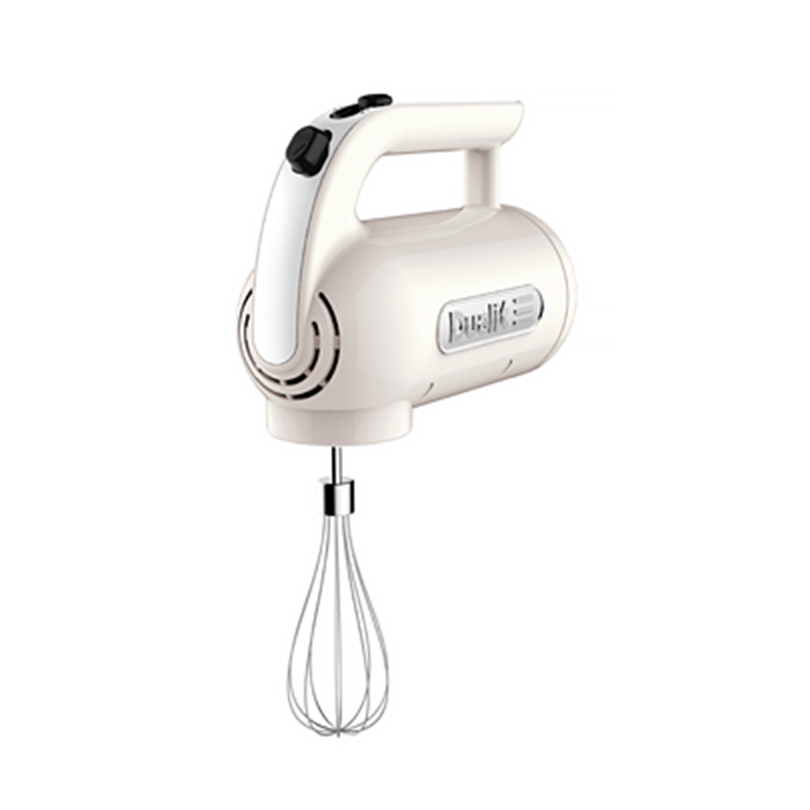

팁 / 가이드
토스터
딱 맞는 토스터 고르기

토스터를 사기 전에, 구울 재료, 사람 수 그리고 주방 공간 등을 고려하는 것이 좋다.
호텔, 카페, 식당 등 영업장에서 사용한다면 고려해야 하는 항목이 다소 달라질 것이다.
예를 들어, 토스터의 출력 등이 중요한 요소가 될 수 있다.
호텔, 카페, 식당 등 영업장에서 사용한다면 고려해야 하는 항목이 다소 달라질 것이다.
예를 들어, 토스터의 출력 등이 중요한 요소가 될 수 있다.
- 크기
- 2구와 4구가 가장 널리 사용되며, 사용자가 많으면 6구가 유용하다.
- 출력
-
출력(W, 와트)가 높을수록 빵을 더 빨리 구울 수 있다.
출력이 낮으면 토스팅 속도가 느려 겉은 바삭하고 속은 부드럽게 토스팅하기가 어려워진다.
2구 토스터의 권장 출력은 1,000W 이상, 4구의 경우는 1,800W 이상이다. 하지만, 빵 종류에 따라 필요한 출력도 다르다.
- 브라우닝 제어
-
토스팅 슬롯 안에 장착된 발열 소자는 빵을 가열해 갈색으로 굽는 역할을 한다.
슬롯 내부 발열 소자를 육안으로 볼 수는 있는데, 와이어 간격이 크고 와이어 양이 적을수록 브라우닝이 균일하지 않고 부분적으로 탄 부분이 생긴다.
와이어 간 간격이 작을 수록 빵이 더 고르게 구워진다.
- 에너지 효율
-
가열할 슬롯 수를 선택 가능하면 전력 사용량을 절감할 수 있다.
또한, 슬롯을 선택 가능하면 빵을 더 고르게 구울 수 있다.
빵을 하나만 굽는데 가열되는 슬롯이 2개이면 한쪽 면만 더 빨리 브라우닝 되기 때문이다.
- 개별 토스팅 기능
-
사용자별 원하는 굽기 정도나 굽는 빵의 종류가 다를 경우 4구 토스터를 고르는게 좋다.
이 경우 슬롯 2개를 한 쌍으로 제어하는 별도의 타이머가 있어서 유용하다.
- 수동 레버
- 이 기능이 있으면 가열 기능을 리셋하지 않고도 빵을 들어올려 상태를 확인 할 수 있다.
- 해동
- 빵이 먼저 해동한 후 굽는 기능이다.
- 청소
- 빵가루가 트레이에 쌓이면 불이 날 수 있기 때문에 트레이를 쉽게 꺼내서 청소할 수 있어야 한다.
- 스타일과 색상
- 다른 주방 기구들과의 조화로움이 중요하다면 다양한 색상과 스타일에서 적합한 토스터를 선택하면 된다.
국문 English 공백 포함 최대 30자 한 줄 노출
-

클래식 토스터 Classic Toaster 메탈 브론즈
Metal Bronze 4구 28% 351,200 439,000 -

클래식 토스터 Classic Toaster 메탈 브론즈
Metal Bronze 4구 28% 351,200 439,000 -

클래식 토스터 Classic Toaster 메탈 브론즈
Metal Bronze 4구 28% 351,200 439,000 -
클래식 토스터 Classic Toaster 메탈 브론즈
Metal Bronze 4구 28% 351,200 439,000 -
클래식 토스터 Classic Toaster 메탈 브론즈
Metal Bronze 4구 28% 351,200 439,000 -
클래식 토스터 Classic Toaster 메탈 브론즈
Metal Bronze 4구 28% 351,200 439,000 -
클래식 토스터 Classic Toaster 메탈 브론즈
Metal Bronze 4구 28% 351,200 439,000 -
클래식 토스터 Classic Toaster 메탈 브론즈
Metal Bronze 4구 28% 351,200 439,000 -
클래식 토스터 Classic Toaster 메탈 브론즈
Metal Bronze 4구 28% 351,200 439,000